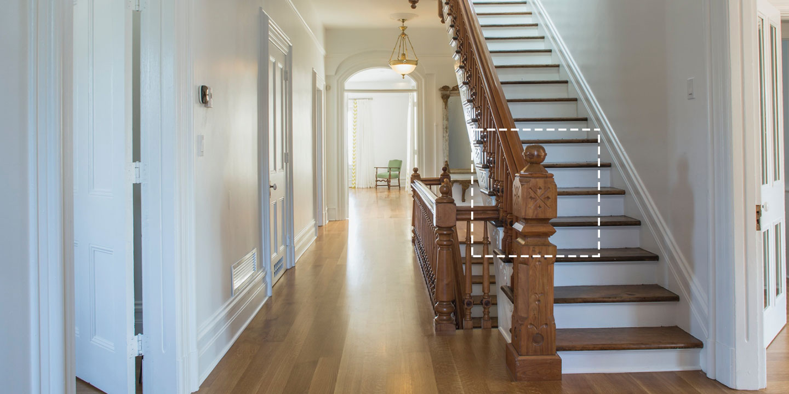
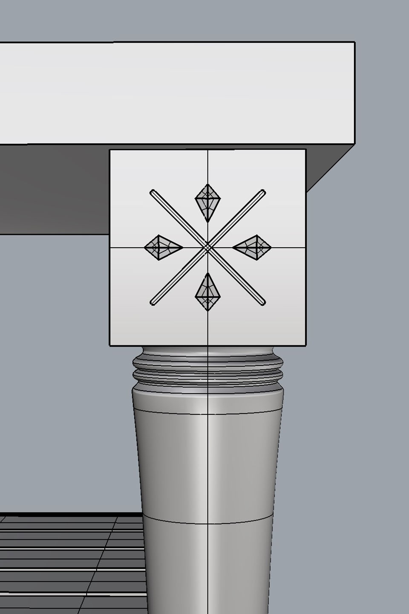
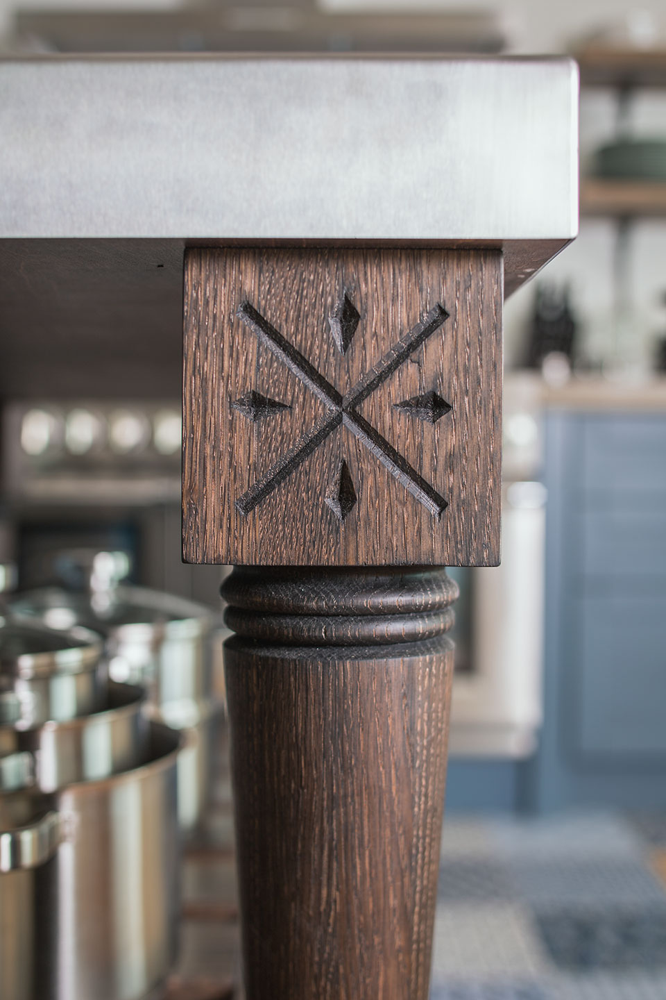

Finding Inspiration in the Existing

During the design process, we found unique design details that were original to the home, which inspired some of the pieces that we created. 3D modeling was an essential tool, for us and the client, that allowed us to visualize and communicate the details faster.

